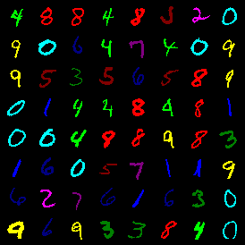
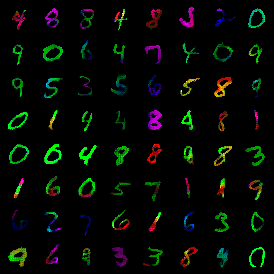
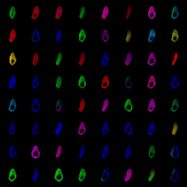
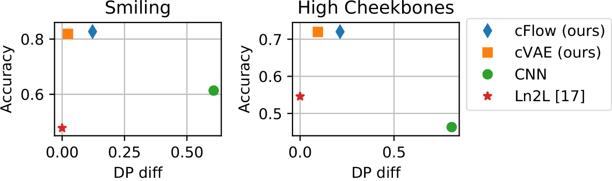
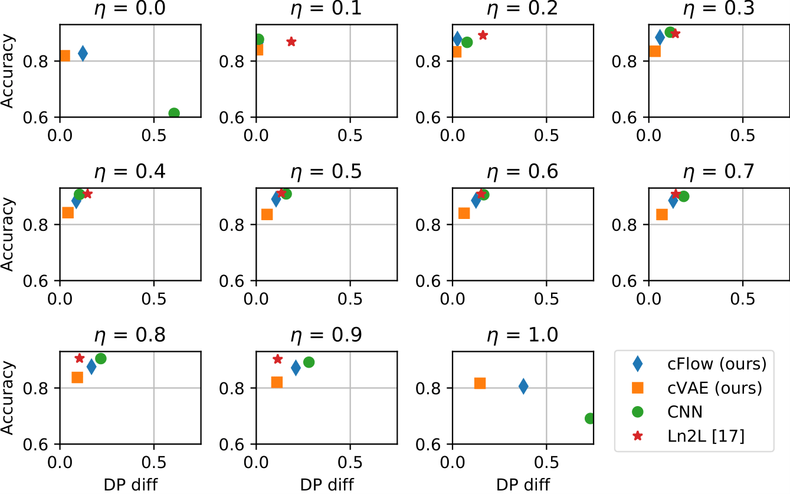
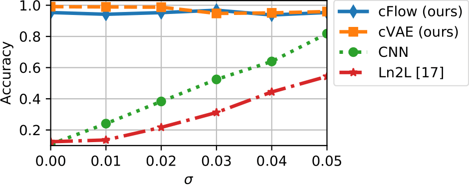
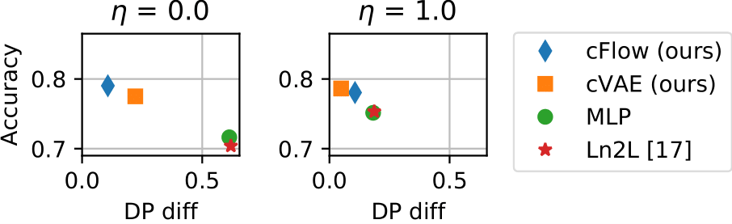

1
Introduction
Without due consideration for the data collection process,
machine learning algorithms can exacerbate biases, or even
introduce new ones if proper control is not exerted over their
learning
. While most of these issues can be solved by controlling and
curating data collection in a fairness-conscious fashion, doing
so is not always an option, such as when working with historical
data. Efforts to address this problem algorithmically have been
centred on developing statistical definitions of fairness and
learning models that satisfy these definitions. One popular
definition of fairness used to guide the training of fair
classifiers, for example, is
demographic parity, stating that positive outcome rates
should be equalised (or invariant) across protected
groups.
In the typical setup, we have an input
\mathbf{x} , a sensitive attribute
s that represents some non-admissible
information like gender and a class label
y which is the prediction target. The idea of
fair representation learning
is then to transform the input \mathbf{x} to a
representation \mathbf{z} which is invariant to
s. Thus, learning from
\mathbf{z} will not introduce a forbidden
dependence on s. A good fair representation is
one that preserves most of the information from
\mathbf{x} while satisfying the aforementioned
constraints.
As unlabelled data is much more freely available than labelled
data, it is of interest to learn the representation in an
unsupervised manner. This will allow us to draw on a much more
diverse pool of data to learn from. While annotations for
y are often hard to come by (and often noisy
), annotations for the sensitive attribute
s are usually less so, as
s can often be obtained from demographic
information provided by census data. We thus consider the
setting where the representation is learned from data that is
only labelled with s and not
y. This is in contrast to most other
representation learning methods. We call the set used to learn
the representation the representative set, because its
distribution is meant to match the distribution of the
deployment setting (and is thus representative).
Once we have learnt the mapping from
\mathbf{x} to \mathbf{z}, we
can transform the training set which, in contrast to
the representative set, has the y labels (and
s labels). In order to make our method more
widely applicable, we allow the case in which the training set
contains a strong spurious correlation between
s and y, which makes it
impossible to learn from it a representation which is invariant
to s but not invariant to y.
Non-invariance to y is important in order to be
able to predict y. The training set thus does
not match the deployment setting, thereby rendering the
representative set essential for learning the right invariance.
From hereon, we will use the terms spurious and
sensitive interchangeably, depending on the context, to
refer to an attribute of the data we seek invariance to. We can
draw a connection between learning in the presence of spurious
correlations and what
call
residual unfairness. Consider the Stop, Question and
Frisk (SQF) dataset for example: the data was collected in New
York City, but the demographics of the recorded cases do not
represent the true demographics of NYC well. The demographic
attributes of the recorded individuals might correlate so
strongly with the prediction target that the two are nearly
indistinguishable. This is the scenario that we are
investigating: s and y are so
closely correlated in the labelled dataset that they cannot be
distinguished, but the learning of s is
favoured due to being the “path of least resistance”. The
deployment setting (i.e. the test set) does not possess this
strong correlation and thus a naïve approach will lead to very
unfair predictions. In this case, a disentangled representation
is insufficient; the representation needs to be explicitly
invariant solely with respect to s. In our
approach, we make use of the (partially labelled) representative
set to learn this invariant representation.
While there is a substantial body of literature devoted to the
problems of fair representation-learning, exactly how the
invariance in question is achieved is often overlooked. When
critical decisions, such as who should receive bail or be
released from jail, are being deferred to an automated decision
making system, it is critical that people be able to trust the
logic of the model underlying it, whether it be via semantic or
visual explanations. We build on the work of
and learn a decomposition (
f^{-1}: Z_s \times Z_{\neg s} \rightarrow X )
of the data domain ( X ) into
independent subspaces invariant to s (
Z_{\neg s} ) and indicative of
s ( Z_{s} ), which lends an
interpretability that is absent from most
representation-learning methods. While model interpretability
has no strict definition
, we follow the intuition
of -
a simple relationship to something we can understand, a
definition which representations in the data domain naturally
fulfil.
Whether as a result of the aforementioned sampling bias or
simply because the features necessarily co-occur, it is not rare
for features to correlate with one another in real-world
datasets. Lipstick and gender for example, are two attributes
that we expect to be highly correlated and to enforce invariance
to gender can implicitly enforce invariance to makeup. This is
arguably the desired behaviour. However, unforeseen biases in
the data may engender cases which are less justifiable. By
baking interpretability into our model (by having
representations in the data domain), though we still have no
better control over what is learned, we can at least diagnose
such pathologies.
To render our representations interpretable, we rely on a simple
transformation we call null-sampling to map invariant
representations in the data domain. Previous approaches to fair
representation learning
predominantly rely upon autoencoder models to jointly minimise
reconstruction loss and invariance. We discuss first how this
can be done with such a model that we refer to as cVAE
(conditional VAE), before arguing that the bijectivity of
invertible neural networks (INNs)
makes them better suited to this task. We refer to the variant
of our method based on these as cFlow (conditional Flow). INNs
have several properties that make them appealing for
unsupervised representation learning. The focus of our approach
is on creating invariant representations that preserve the
non-sensitive information maximally, with only knowledge
ofs and not of the target y,
while at the same time having the ability to easily probe what
has been learnt.
Our contribution is thus two-fold: 1) We propose a simple
approach to generating representations that are invariant to a
feature
s, while having the benefit of interpretability
that comes with being in the data domain. 2) We explore a
setting where the labelled training set suffers from varying
levels of sampling bias, which we expect to be common not only
in fairness problems but machine learning problems more broadly,
demonstrating an approach based on transferring information from
a more diverse representative set, with guarantees of the
non-spurious information being preserved.
CelebA null-samples learned by our cFlow model, with gender
as the sensitive attribute. (a) The original, untransformed
samples from the CelebA dataset (b) Reconstructions using
only information unrelated to
s. (c) Reconstruction using only
information related to \neg s. The model
learns to disentangle gender from the non-gender related
information. Note that some attributes like skin tone seem
to change along with gender due to the correlation between
the attributes. This is especially visible in images (1,1)
and (3,2). Only because our representations are produced in
the data-domain can we easily spot such instances of
entanglement.

Samples from the cMNIST training set,
\sigma=0.

x_u null-samples from the cFlow
model.

x_b null-samples from the cFlow
model.
Sample images from the coloured MNIST dataset problem with
$10$ predefined mean colours. (a): Images from the
spuriously correlated subpopulation where colour is a
reliable signal of the digit class-label. (b-c): Results of
running our approach realised with cFlow on the cMNIST
dataset. The model learns to retain the shape of the digit
shape while removing the relationship with colour. A
downstream classifier is now less prone to exploiting
correlations between colour and the digit label class.
2
Background
Learning fair representations.
Given a sensitive attribute s (for example,
gender or race) and inputs \mathbf{x}, a fair
representation \mathbf{z} of
\mathbf{x} is then one for which
\mathbf{z} \perp s holds, while ideally also
being predictive of the class label y.
was the first to
propose the learning of fair representations which allow for
transfer to new classification tasks. More recent methods are
often based on variational autoencoders (VAEs)
. The achieved fairness of the representation can be measured
with various fairness metrics. These measure, however, usually
how fair the predictions of a classifier are and not how fair a
representation is.
The appropriate measure of fairness for a given task is
domain-specific and there
is often not a universally accepted measure. However,
Demographic Parity is the most widely used
.
Demographic Parity demands
\hat{y} \perp s where
\hat{y} refers to the predictions of the
classifier. In the context of fair representations, we measure
the Demographic Parity of a downstream classifier,
f(\cdot ), which is trained on the
representation z i.e.
f: Z \to \hat{Y}.
A core principle of all fairness methods is the
accuracy-fairness trade-off. As previously stated, the
fair representation should be invariant to s (
\to fairness) but still be predictive of
y (\to accuracy). These
desiderata cannot, in general, be simultaneously satisfied if
s and y are correlated.
The majority of existing methods for fair representations also
make use of y labels during training, in order
to ensure that \mathbf{z} remains predictive of
y. This aspect can, in theory, be removed from
the methods, but then there is no guarantee that information
about y is preserved
.
Learning fair, transferrable representations.
In addition to producing fair representations,
want to ensure the
representations are transferrable. Here, an adversary is used to
remove sensitive information from a representation
z. Auxiliary prediction and reconstruction
networks, to predict class label y. and
reconstruct the input x respectively, are
trained on top of z, with
s being ancillary input to the reconstruction.
Also related is who
employ a FactorVAE
regularised for
fairness. The idea is to learn a representation that is both
disentangled and invariant to multiple sensitive attributes.
This factorisation makes the latent space easily manipulable
such that the different subspaces can be freely removed and
composed at test time. Zeroing out the dimensions or replacing
them with independent noise imparts invariance to the
corresponding sensitive attribute. This method closely resembles
ours when we use an invertible encoder. However, the emphasis of
our approach is on interpretability, information-preservation,
and coping with sampling bias - especially extreme cases where
|\, \textrm{supp}(S_{tr} \times Y_{tr}) | < |\,
\textrm{supp}(S_{te} \times Y_{te}) |.
Attempts were made by prior
to this work to learn fair representations in the data domain in
order to make it interpretable and transferable. In their work,
the input is assumed to be additively decomposable in the
feature space into a fair and
unfair component, which together can be used by the
decoder to recover the original input. This allows us to examine
representations in a human-interpretable space and confirm that
the model is not learning a relationship reliant on a sensitive
attribute. Though a first step in this direction, we believe
such a linear decomposition is not sufficiently expressive to
fully capture the relationship between the sensitive and
non-sensitive attributes. Our approach allows for the modelling
of more complex relationships.
Learning in the presence of spurious correlations.
Strong spurious correlations make the task of learning a robust
classifier challenging: the classifier may learn to exploit
correlations unrelated to the true causal relationship between
the features and label, and thereby fail to generalise to novel
settings. This problem was recently tackled by
who apply a penalty based on the
mutual information between the feature embedding and the
spurious variable. While the method is effective under mild
biasing, we show experimentally that it is not robust to the
range of settings we consider.
Jacobsen et al. explore
the vulnerability of traditional neural networks to spurious
variables - e.g., textures, in the case of ImageNet
- and propose a INN-based
solution akin to ours. The INN's encoding is split such that one
partition, z_b is encouraged to be predictive
of the spurious variable while the other serves as the logits
for classification of the semantic label. Information related to
the nuisance variable is “pulled out" of the logits as a result
of maximising \log p(s|z_n). This specific
approach, however, is incompatible with the settings we
consider, due to its requirement that both
s and y be available at
training time.
Viewing the problem from a causal perspective,
develop a variant
of empirical risk minimisation called invariant risk
minimisation (IRM). The goal of IRM is to train a predictor that
generalises across a large set of unseen environments; because
variables with spurious correlations do not represent a stable
causal mechanism, the predictor learns to be invariant to them.
IRM assumes that the training data is not iid but is
partitioned into distinct environments,
e \in E. The optimal predictor is then defined
as the minimiser of the sum of the empirical risk
R_e over this set. In contrast, we assume
possession of only a single source of labelled, albeit
spuriously-correlated, data, but that we have a second source of
data that is free of spurious correlations, with the benefit
being that it only needs to be labelled
with respect to s .
3
Interpretable Invariances by Null-Sampling
Training procedure for our models. x:
input, s: sensitive attribute,
z_u: de-biased representation,
x_u: de-biased version of the input in the
data domain. The red bar indicates a gradient reversal
layer, and \stackrel{\rightarrow}{0} the
null-sampling operation.
Problem Statement
We assume we are given inputs
\mathbf{x} \in \mathcal{X} and corresponding
labels y \in \mathcal{Y}. Furthermore, there is
some spurious variable
s \in \mathcal{S} associated with each input
\mathbf{x} which we do not want to
predict. Let X, S and
Y be random variables that take on the values
\mathbf{x}, s and
y, respectively. The fact that both
y and s are predictive of
\mathbf{x} implies that
\mathcal{I}(X;Y), \mathcal{I}(X;S) > 0,
where \mathcal{I}(\cdot ;\cdot) is the mutual
information. Note, however, that the conditional entropy is
non-zero: H(S|X) \neq 0, i.e.,
S is not completely determined by
X.
The difficulty of this setup emerges in the training set: there
is a close correspondence between S and
Y, such that for a model that sees the data
through the lens of the loss function, the two are
indistinguishable. Furthermore, we assume that this is
not the case in the test set, meaning the model cannot
rely on shortcuts provided by S if it is to
generalise from the training set.
Such scenarios where we only have access to the labels of a
biasedly-sampled subpopulation are not uncommon in the
real-world. For instance, in long-feedback systems such as
mortgage-approval where the demographics of the subpopulation
with observed outcomes is not representative of the
subpopulation on which the model has been deployed. In this
case, s has the potential to act as a false (or
spurious) indicator of the class label and training a
model with such a dataset would limit generalisability. Let
(X^\mathit{tr}, S^\mathit{tr}, Y^\mathit{tr})
then be the random variables sampled for the training set and
(X^\mathit{te}, S^\mathit{te}, Y^\mathit{te})
be the random variables for the test set. The training and test
sets thus induce the following inequality for their mutual
information:
\mathcal{I}(S^\mathit{tr}; Y^\mathit{tr}) \gg
\mathcal{I}(S^\mathit{te}; Y^\mathit{te}) \approx 0
.
Our goal is to learn a representation
\mathbf{z}_u that is independent of
s and transferable between downstream tasks.
Complementary to \mathbf{z}_u, we refer to some
abstract component of the model that absorbs the unwanted
information related to s as
\mathcal{B}, the realisation of which we define
with respect to each of the two models to be described. The
requirement for \mathbf{z}_u can be expressed
via mutual information:
I(\mathbf{z}_u;s) = 0
However, for the representation to be useful, we need to capture
as much relevant information in the data as possible. Thus, the
combined objective function:
\min_{\theta} \mathbb{E}_{x \sim X}[-\log
p_\theta(\mathbf{x})] + \lambda I(f_\theta(x);s)
where \theta refers to the trainable parameters
of our model f_\theta and
p_\theta(\mathbf{x}) is the likelihood it
assigns to the data.
We optimise this loss in an adversarial fashion by playing a
min-max game, in which our encoder acts as the generative
component. The adversary is an auxiliary classifier
g, which receives
\mathbf{z}_u as input and attempts to predict
the spurious variable s. We denote the
parameters of the adversary as \phi; for the
parameters of the encoder we use \theta, as
before. The objective from `Eq~\eqref{eq:objectivetheory}` is
then realised as
\min_{\theta \in \Theta} \max_{\phi \in \Phi}
\mathbb{E}_{x \sim X} [\log p_\theta(x)
-\lambda\mathcal{L}_c(g_\phi(f_\theta(x))); s)]
where \mathcal{L}_c is the cross-entropy
between the predictions for s and the provided
labels. In practice, this adversarial term is realised with a
gradient reversal layer (GRL)
between
\mathbf{z}_u and g as is
common in adversarial approaches to fair representation learning
.
The Disentanglement Dilemma
The objective in Eq~\eqref{eq:objectivepractical} balances the
two desiderata: predicting y and being
invariant to s. However, in the training set
(X^\mathit{tr}, S^\mathit{tr}, Y^\mathit{tr}),
y and s are so strongly
correlated that removing information about
s inevitably removes information about
y. This strong correlation makes existing
methods fail under this setting. In order to even define the
right learning goal, we require another source of information
that allows us to disentangle s and
y. For this, we assume the existence of another
set of samples that follow a similar distribution to the test
set, but whilst the sensitive attribute is available, the class
labels are not. In reality, this is not an unreasonable
assumption, as, while properly annotated data is scarce,
unlabelled data can be obtained in abundance (with demographic
information from census data, electoral rolls, etc.). Previous
work has also considered treated “unlabelled data" as still
having s labels
. We are restricted
only in the sense that the spurious correlations we want to
sever are indicated in the features. We call this the
representative set, consisting of
X^\mathit{rep} and
S^\mathit{rep}. It fulfils
\mathcal{I}(S^\mathit{rep}; Y^\mathit{rep}) \approx 0
(or rather, it would, if the class labels
Y^\mathit{rep} were available).
We now summarise the training procedure; an outline for the
invertible network model (cFlow) can be seen in
Fig.~\ref{fig:inn_diagram}. First, the encoder network
f is trained on (
X^\mathit{rep}, S^\mathit{rep} ), during the
first phase. The trained network is then used to encode the
training set, taking in \mathbf{x} and
producing the representation, \mathbf{z}_u,
decorrelated from the spurious variable. The encoded dataset can
then be used to train any off-the-shelf classifier safely, with
information about the spurious variable having been absorbed by
some auxiliary component \mathcal{B}. In the
case of the conditional VAE (cVAE) model,
\mathcal{B} takes the form of the decoder
subnetwork, which reconstructs the data conditional on a one-hot
encoding of s, while for the invertible network
\mathcal{B} is realised as a partition of the
feature map \mathbf{z} (such that
\mathbf{z} = [\mathbf{z}_u, \mathbf{z}_b] ),
given the bijective constraint. Thus, the classifier cannot take
the shortcut of learning s and instead must
learn how to predict y directly. Obtaining the
s-invariant representations,
\mathbf{x}_u, in the data domain is simply a
matter of replacing the \mathcal{B} component
of the decoder's input for the cVAE, and
\mathbf{z}_b for cFlow, with a zero vector of
equivalent size. We refer to this procedure used to generate
\mathbf{x}_u as null-sampling (here,
with respect to \mathbf{z}_b).
Null-sampling resembles the annihilation operation
described in , however we
note that the two serve very different roles. Whereas the
annihilation operation serves as a regulariser to prevent
trivial solutions (similar to
), null-sampling
is used to generate the invariant representations post-training.
Conditional Decoding
We first describe a VAE-based model similar to that proposed in
, before highlighting
some of its shortcomings that motivate the choice of an
invertible representation learner.
The model takes the form of a class conditional
\beta-VAE
, in which the decoder is
conditioned on the spurious attribute. We use
\theta_{enc}, \theta_{dec} \in \theta
to denote the parameters of the encoder and decoder
sub-networks, respectively. Concretely, the encoder component
performs the mapping
x \rightarrow{\mathbf{z}_u}, while
\mathcal{B} is instantiated as the decoder,
\mathcal{B} \coloneqq p_{\theta_{dec}}(x|z_u, s), which takes in a concatenation of the learned non-spurious
latent vector \mathbf{z}_u and a one-hot
encoding of the spurious label s to produce a
reconstruction of the input \hat{x}.
Conditioning on a one-hot encoding of s, rather
than a single value, as done in
is the key to
visualising invariant representations in the data domain. If
\mathcal{I}(z_u; s) is properly minimised, the
decoder can only derive its information about
s from the label, thereby freeing up
\mathbf{z}_u from encoding the unwanted
information while still allowing for reconstruction of the
input. Thus, by feeding a zero-vector to the decoder we achieve
\hat{x} \perp s. The full learning objective
for the cVAE is given as
\mathcal{L}_{\mathrm{cVAE}} =
\mathbb{E}_{q_{\theta_{enc}}(z_u, b|x)}[\log
p_{\theta_{dec}}(x|z, b) - \log p_{\theta_{dec}}(s|z_u)]
\beta D_{KL}(q_{\theta_{enc}}(z_u |x) \| p(z_u))
where \beta is a hyperparameter that determines
the trade-off between reconstruction accuracy and independence
constraints, and p(\mathbf{z}_u) is the prior
imposed on the variational posterior. For all our experiments,
p(\mathbf{z}_u) is realised as an Isotropic
Gaussian. Fig.~\ref{fig:cvae_diagram} summarises the procedure
as a diagram.
While we show this setup can indeed work for simple problems, as
before us have, we
show that it lacks scalability due to disagreement between the
components of the loss. Since information about
s is only available to the decoder as a binary
encoding, if the relationship between s and
x is highly non-linear and cannot be summarised
by a simple on/off mechanism, as is the case if
s is an attribute such as gender, off-loading
information to the decoder by conditioning is no longer
possible. As a result, \mathbf{z}_u is forced
to carry information about s in order to
minimise the reconstruction error.
The obvious solution to this is to allow the encoder to store
information about s in a partition of the
latent space as in .
However, we question whether an autoencoder is the best choice
for this setup, with the view that an invertible model is the
better tool for the task. Using an invertible model has several
guarantees, namely complete information-preservation and freedom
from a reconstruction loss, the importance of which we elaborate
on below.
Conditional Flow
Invertible Neural Networks
Invertible neural networks are a class of neural network
architecture characterised by a bijective mapping between their
inputs and output . The
transformations are designed such that their inverses and
Jacobians are efficiently computable. These flow-based models
permit exact likelihood estimation
through the warping of a
base density with a series of invertible transformations and
computing the resulting, highly multi-modal, but still
normalised, density, using the change of variable theorem:
\log p(x) = \log p(z) + \sum \log | \det (
\frac{\textrm{d}h_i}{h_{i-1}} ) |
\quad p(z) = \mathcal{N}(z; 0, \mathbb{I})
\label{eq:changeofvariables} where h_i refers
to the outputs of the layers of the network and
p(z) is the base density, specifically an
Isotropic Gaussian in our case. Training of the invertible
neural network is then reduced to maximising
\log p(x)
over the training set, i.e. maximising the probability the
network assigns to samples in the training set.
The Benefits of Bijectivity.
Using an invertible network to generate our encoding,
\mathbf{z}_u, carries a number of advantages
over other approaches. Ordinarily, the main benefit of
flow-based models is that they permit exact density estimation.
However, since we are not interested in sampling from the
model's distribution, in our case the likelihood term serves as
a regulariser, as it does for
. Critically, this forces the
mean of each latent dimension to zero enabling null-sampling.
The invertible property of the network guarantees the
preservation of all information relevant to
y which is independent of s,
regardless of how it is allocated in the output space. Secondly,
we conjecture that the encodings are more robust to
out-of-distribution data. Whereas an autoencoder could map a
previously seen input and a previously unseen input to the same
representation, an invertible network sidesteps this due to the
network's bijective property, ensuring all relevant information
is stored somewhere. This opens up the possibility of transfer
learning between datasets with a similar manifestation of
s, as we demonstrate in the Appendix G.
Under our framework, the invertible network
f maps the inputs
\mathbf{x} to a representation
\mathbf{z}_u:
f(\mathbf{x}) = \mathbf{z}. We interpret the
embedding \mathbf{z} as being the concatenation
of two smaller embeddings:
\mathbf{z} = [\mathbf{z}_u, \mathbf{z}_b]. The
dimensionality of \mathbf{z}_b, and
\mathbf{z}_u, by complement, is a free
parameter (see Appendix C for tuning strategies). As
f is invertible,
\mathbf{x} can be recovered like so:
\mathbf{x} = f^{-1}([\mathbf{z}_u, \mathbf{z}_b])
where \mathbf{z}_b is required for equality of
the output dimension and input dimension to satisfy the
bijectivity of the network - we cannot output
\mathbf{z}_u alone, but have to output
\mathbf{z}_b as well. In order to generate the
pre-image of \mathbf{z}_u, we perform
null-sampling with respect to \mathbf{z}_b by
zeroing-out the elements of \mathbf{z}_b (such
that
\mathbf{x}_{u} = f^{-1}([\mathbf{z}_{u},
\stackrel{\rightarrow}{0}])), i.e. setting them to the mean of the prior density,
\mathcal{N}(z;0, I).
How can we be sure that \mathbf{z}_u contains
enough information about y? The importance of
the invertible architecture bears out from this consideration.
As long as \mathbf{z}_b does not contain the
information about y,
\mathbf{z}_u necessarily must. We can raise or
lower the information capacity of
\mathbf{z}_b by adjusting its size; this should
be set to the smallest size sufficient to capture all
information about s, so as not to sacrifice
class-relevant information.
Experiments
We present experiments to demonstrate that the null-sampled
representations are in fact invariant to
s while still allowing a classifier to predict
y from them. We run our cVAE and cFlow models
on the coloured MNIST (cMNIST) and CelebA dataset, which we
artificially bias, first describing the sampling procedure we
follow to do so for non-synthetic datasets. As baselines we have
the model of (Ln2L) and the same
CNN used to evaluate the cFlow and cVAE models but with the
unmodified images as input (CNN). For the cFlow model we adopt a
Glow-like architecture , while
both subnetworks of the cVAE model comprise gated convolutions
, where the encoding
size is $$256$$. For cMNIST, we construct the Ln2L baseline
according to its original description, for CelebA, we treat it
as an augmentation of the baseline CNN's objective function.
Detailed information regarding model architectures and the code
can be found in Appendix A.

Performance of our model for different targets (mixing
factor
\eta=0). Left: Smiling as target,
right: high cheekbones. DP diff measures
fairness with respect to demographic parity. A perfectly
fair model has a DP diff of 0.

Performance of our model for the target “smiling” for
different mixing factors \eta.
DP diff measures fairness with respect to
demographic parity. A perfectly fair model has a
DP diff of $$0$$, thus the closer to top-left the
better it is in terms of we accuracy-fairness trade-off.
Only values \eta=0 and
\eta=1 correspond to the scenario of a
strongly biased training set. The results for
0.1 \leq \eta \leq 0.9 are to confirm that
our model does not harm performance for non-biased training
sets.
Synthesising Dataset Bias.
For our experiments, we require a training set that exhibits a
strong spurious correlation, together with a test set that does
not. For cMNIST, this is easily satisfied as we have complete
control over the data generation process. For CelebA and UCI
Adult, on the other hand, we have to generate the split from the
existing data. To this end, we first set aside a randomly
selected portion of the dataset from which to sample the biased
dataset The portion itself is then split further into two parts:
one in which
(s=-1 \land y=-1) \lor (s=+1 \land y=+1) holds
true for all samples, call this part
\mathcal{D}_{eq}, and the other part, call it
\mathcal{D}_{opp}, which contains the remaining
samples. To investigate the behaviour at different levels of
correlation, we mix these two subsets according to a mixing
factor \eta. For
\eta \leq \tfrac{1}{2}, we combine (all of)
\mathcal{D}_{eq} with a fraction of
2\eta from \mathcal{D}_{opp}.
For \eta > \tfrac{1}{2}, we combine (all of)
\mathcal{D}_{opp} and a fraction of
2(1 -\eta) from
\mathcal{D}_{eq}. Thus, for
\eta=0, the biased dataset is just
\mathcal{D}_{eq}, for
\eta=1 it is just
\mathcal{D}_{opp} and for
\eta=\tfrac{1}{2} the biased dataset is an
ordinary subset of the whole data. The test set is simply the
data remaining from the initial split.
Evaluation protocol.
We evaluate our results in terms of accuracy and fairness. A
model that perfectly decouples its predictions from
s will achieve near-uniform accuracy across all
biasing-levels. For binary $$s$$/$$y$$ we quantify the fairness
of a classifier's predictions using
demographic parity (DP): the absolute difference in the
probability of a positive prediction for each sensitive group.

Accuracy of our approach in comparison with other baseline
models on the cMNIST dataset, for different standard
deviations (\sigma) for the colour
sampling.
Experimental results
In this section, we report the results from two image datasets:
cMNIST, as a synthetic dataset, provides a good starting point
for characterising our model due to the direct control it
affords us over the biasing. CelebA, on the other hand, offers a
more practical and challenging example. We also test our method
on a tabular dataset, the UCI Adult dataset.
cMNIST.
The coloured MNIST (cMNIST) dataset is a variant of the MNIST
dataset in which the digits are coloured. In the training set,
the colours have a one-to-one correspondence with the digit
class. In the test set (and the representative set), colours are
assigned randomly. The colours are drawn from Gaussians with 10
different means. We follow the colourisation procedure outlined
by
, with the mean colour values
selected so as to be maximally dispersed. The full list of such
values can be found in Appendix D. We produce multiple variants
of the cMNIST dataset corresponding to different standard
deviations \sigma for the colour sampling:
\sigma \in \{0.00, 0.01, ..., 0.05 \}.
Since the data-generation process is known, we can establish a
baseline an additional by following the simple heuristic of
grey-scaling the dataset which only leaves the luminosity as
spurious information. We also evaluate the model, with all the
associated hyperparameters, from .
The only difference between the setups is on the side of dataset
creation, including the range of \sigma values
we consider. Our versions of the dataset, on the whole, exhibit
much stronger colour bias, to the point of the mapping the
digit's colour and class being bijective. Figure
ref{fig:cmnist_chart} shows that the model significantly
underperforms even the naïve baseline, aside from at
\sigma = 0, where they are on par.
Inspection of the null-samples shows that both the cVAE and
cFlow model succeed in removing almost all colour information,
which is supported quantitatively by Fig. ref{fig:cmnist_chart}.
While the cVAE outperforms cFlow marginally at low
\sigma values, performance degrades as this
increases. This highlights the problems with the conditional
decoder we anticipated in Section ref{conddec}. The lower
\sigma, and therefore the variation in sampled
colour, is, the more reliably the $$s$$ label, corresponding to
the mean of RGB distribution, encodes information about the
colour. For higher \sigma values, the sampled
colours can deviate far from the mean and so the encoder must
incorporate information about $$s$$ into its representation if
it is to minimise the reconstruction loss. cFlow, on the other
hand, is consistent across $$\sigma$$ values.
CelebA.
To evaluate the effectiveness of our framework on real-world
image data we use the CelebA dataset
, consisting of
$$202,599$$ celebrity images. These images are annotated with
various binary physical attributes, including “gender”, “hair
color”, “young”, etc, from which we select our sensitive and
target attributes. The images are centre cropped and resized to
64\times64, as is standard practice. For our
experiments, we designate “gender” as the sensitive attribute,
and “smiling” and “high cheekbones” as target attributes. We
chose gender as the sensitive attribute as it a common sensitive
attribute in the fairness literature. For the target attributes,
we chose attributes that are harder to learn than gender and
which do not correlate too strongly with gender in the dataset
(“wearing lipstick” for example being an attribute too closely
correlated with gender). The model is trained on the
representative set (normal subset of CelebA) and is then used to
encode the artificially biased training set and the test set.
The results for the most strongly biased training set
(\eta=0) can be found in Fig.
ref{fig:celeba-targets}. Our method outperforms the baselines in
accuracy and fairness.
We also assess performance for different mixing factors
(\eta) which correspond to varying degrees of
bias in the training set (see Fig. ref{fig:celeba-multiplot}).
This is to verify that the model does not
harm performance when there is not much bias in the
training set. For these experiments, the model is trained once
on the representative set and is then used to encode different
training sets. The results show that for the intermediate values
of \eta, our model incurs a small penalty in
terms of accuracy, but at the same time makes the results
fairer (corresponding to an accuracy-fairness
trade-off). Qualitative results can be found in Fig.
ref{fig:celeba_cflow} (images from cVAE can be found in Appendix
F).
To show that our method can handle multinomial, as well as
binary, sensitive attributes, we also conduct experiments with
s=\textrm{hair color} as a ternary attribute
(“Blonde”, "Black", “Brown”), excluding “Red” because of the
paucity of samples and the noisiness of their labels. The
results for these experiments can be found in Appendix B.

Results for the Adult dataset. The
x-axis corresponds to the difference in
positive rates. An ideal result would occupy the
top-left.
Results for the UCI Adult dataset.
The UCI Adult dataset consists of census data and is commonly
used to evaluate models focused on algorithmic fairness.
Following convention, we designate “gender” as the sensitive
attribute $$s$$ and whether an individual's salary is $50,000 or
greater as $$y$$. We show the performance of our approach in
comparison to baseline approaches in Fig. ref{fig:adult-chart}.
We evaluate the performance of all models for mixing factors
(\eta) $$0$$ and $$1$$. Results shown in Fig.
ref{fig:adult-chart} show that we match or exceed the baseline.
In terms of fairness metrics, our approach generally outperforms
the baseline models for both of
\eta. Detailed results can be found in the
Appendix B.
Conclusion
We have proposed a general and straightforward framework for
producing invariant representations, under the assumption that a
representative but partially-labelled
representative set is available. Training consists of
two stages: an encoder is first trained on the representative
set to produce a representation that is invariant to a
designated spurious feature. This is then used as input for a
downstream task-classifier, the training data for which might
exhibit extreme bias with respect to that feature. We train both
a VAE- and INN-based model according to this procedure, and show
that the latter is particularly well-suited to this setting due
to its losslessness. The design of the models allows for
representations that are in the data domain and therefore
exhibit meaningful invariances. We characterise this for
synthetic as well as real-world datasets for which we develop a
method for simulating sampling bias.